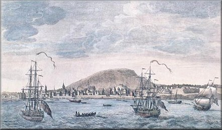
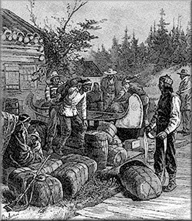
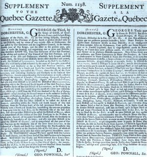
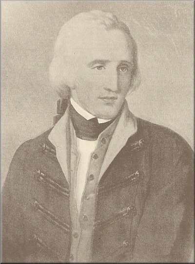

|
Les Canadiens ont vécu de 1759 à 1764 une période de cinq ans fort importante par le caractère inattendu et extraordinaire des mesures que les Anglais appliquent à la colonie française; période qui fait de ce Régime militaire une boîte à surprises. Malgré la victoire
britannique en Amérique, les combats entre la France et l'Angleterre ne sont pas terminés
en Europe. Tout est en suspens. Pendant près de cinq ans, la Nouvelle-France est occupée par
l'armée britannique et régie par la loi martiale. TROIS PAYS DISTINCTS Le Canada d'avant la Conquête correspondait à l'espace habité sur le Saint-Laurent, avec deux prolongements commerciaux, l'un à l'est, soit la Côte-nord, l'île Anticosti, l'archipel La Madeleine et la Gaspésie, l'autre, à l'ouest, couvrant les Grands Lacs, dont Détroit et de nombreux postes de traite (les pays d'en haut). Le gouvernement royal est à Québec, représenté par un gouverneur, il y a trois régions administratives, Québec, Trois-Rivières et Montréal.. Dans ce cadre plus que centenaire, un premier bouleversement se produit à l'automne 1759, quand l'armée anglaise occupe et, par conséquent, isole du reste du pays la région de Québec, c'est-à-dire depuis le golfe jusqu'à la rivière Jacques-Cartier (aujourd'hui la ville de Donnacona). Le gouverneur, l'évêque et toute l'administration de la ville de Québec se réfugient à Montréal.  Montréal en 1762 Survient alors, et c'est une première grande surprise, une division du Canada (celui de l'habitat laurentien) en trois entités distinctes, qui correspondent aux trois anciennes régions administratives de Québec, Trois-Rivières et Montréal, mais cette fois, la distinction est tellement rigoureuse que ces gouvernements sont trois pays, chacun sous l'autorité exclusive de son gouverneur, séparés les uns et les autres par des frontières militaires. Trois pays donc, où il n'y a plus comme auparavant cette capitale nationale qui unissait sous le même autorité les trois régions: chacun a sa capitale exclusive. Trois pays, chacun souverain par rapport aux deux autres. Vous voyagez de Québec à Montréal : vous présentez votre passeport à l'entrée au gouvernement des Trois-Rivières, précisément à Sainte-Anne-de-la-Pérade où se tient une garnison militaire, de nouveau à la frontière suivante, à Maskinongé, une autre garnison vous permet de sortir du gouvernement des Trois-Rivières pour entrer enfin dans celui de Montréal. Les autorités sont chatouilleuses sur ce point des entrées et des sorties. Aucune migration d'un pays à l'autre n'est permise sans un passeport du gouverneur, même pour les supérieurs ecclésiastiques ou administratifs. MONNAIE Trois pays donc, délimités par des frontières que gardent des militaires. Trois pays qui, en plus d'une même monnaie française, utilisent une monnaie anglaise, la livre sterling. Pour compliquer la situation la livre anglaise ne suit pas le même cours partout: à Québec, elle se comporte selon le cours d'Halifax, alors qu'à Montréal, elle suit le cours de New-York. Le Canadien du Régime militaire qui se rend à Montréal, s'il a de la monnaie anglaise, et la Conquête en a introduit en abondance, voit sa livre anglaise passer d'une valeur, par exemple, de 24 livres françaises à celle de 15 livres. Aux Trois-Rivières, on utilise les deux cours... Le double cours du numéraire anglais n'est pas la seule complication monétaire. Le numéraire français, qui continue de circuler, est lui-même composé d'une variété de pièces, dont il faut établir la valeur selon la livre anglaise. Il y a des pièces en cuir, en argent, en or. Sans compter la guinée d'Angleterre, la piastre d'Espagne, la portugaise,... Le portefeuille du Canadien est un vrai casse-tête quand vient le temps de payer les comptes.
COMMERCE  Alors que, sous le régime français, la liberté commerciale était très restreinte, les vainqueurs accordent aux habitants et négociants "tous les privilèges du commerce aux mêmes faveurs et conditions accordées aux sujets de Sa Majesté Britannique tant dans les pays d'en-haut que dans l'intérieur de la colonie". Des réglementations ultérieures viendront quand même restreindre cette liberté. Le Régime militaire abolit donc les monopoles qui réservaient les opérations commerciales à un individu ou à un groupe. Le commerce devient ouvert à tout un chacun qui est en mesure de le pratiquer. C'est la liberté générale aux entrepreneurs.Les profits qu'on retire du commerce n'est plus restreint à un placement à fonds perdu: le prêt à intérêt n'est plus condamné comme de l'usure. JUSTICE À la Coutume de Paris qui continue pleinement de gérer la vie des Canadiens, s'ajoutent, mais de manière facultative, certaines règles du Common Law. Par exemple, l'âge de la majorité passe de 25 à 21 ans, ce qui était un avantage pour les jeunes gens qui voulaient dépendre moins longtemps de l'autorité parentale. Le capitaine de milice de chaque paroisse est institué juge de première instance. Puis on met en place des Chambres d'audience, chacune devant desservir un district regroupant un certain nombre de paroisses. Ce qui fait que de simples habitants deviennent juges de leurs pairs, mais ces derniers peuvent toujours en appeler à une Cour supérieure. Ce système a au moins l'avantage de rapprocher du peuple la justice de première instance. MILICE RÉGULIÈRE, FACULTATIVE ET LUCRATIVE
Le 27 avril 1763, insatisfait des nouvelles règles de commerce instaurées par les conquérants et désirant contenir l’expansion européenne, le chef des Outaouais, Pontiac, tente de galvaniser les Outaouais, les Sauteux et les Renards contre les Anglais. Les tribus amérindiennes organisent en mai 1763 une série de raids sanglants contre les comptoirs de l’intérieur. À la demande de Murray, le clergé catholique se voit forcé de convaincre les Canadiens de se porter volontaires. Les Amérindiens sont presque totalement écrasés à Détroit. Selon l’historien Michel Brunet, "la guerre de Pontiac inaugura une nouvelle forme de collaboration entre les conquérants anglais et les administrateurs ecclésiastiques. Ceux-ci devinrent obligés de défendre auprès de la population les expéditions militaires des Britanniques et de jouer, en quelque sorte, le rôle de véritables agents recruteurs à leur service". POSTE Les communications s'améliorent grâce à un service postal régulier. Jusque-là le courrier officiel du gouvernement relevait des fonctionnaires, le courrier privé dépendait des voyages privés et du bon vouloir des gens qui allaient d'un lieu à l'autre. En 1763, complétant le réseau déjà établi dans les colonies anglo-américaines, l'Angleterre met en place, entre Québec et Montréal, un service postal officiel et régulier. MESURES Deux mesures anglaises, le mille et la verge, s'ajoutent au système français. Dans ce dernier, on passait sans intermédiaire du pied à la toise (de 6 pieds), la verge (de 3 pieds) est donc utile, de même que le mille qui devient une mesure intermédiaire entre l'arpent et la lieue. LA PRESSE  Le 21 juin 1764, William Brown et Thomas Gilmore publient la première édition de la Quebec Gazette / Gazete de Québec, un journal bilingue.C'est le premier journal à être publié au Canada. Il n'y avait aucune imprimerie dans la colonie française.
RELIGION Les autorités militaires anglaises acceptent de laisser le libre exercice de la religion catholique aux Canadiens. Le seul problème est que, l'évêque Pontbriand étant décédé en 1760, le siège épiscopal demeure vacant et personne n'a autorité pour nommer un successeur. L'autorité religieuse repose sur le seul grand-vicaire de chacun des trois gouvernements, sans qu'aucun ne soit dans la pratique soumis à l'un des deux autres. Ils n'arrivent pas à coordonner leurs actions. Or, l'autorité militaire se fait pressante, et des questions se posent. Par exemple, peut-on faire prier pour le roi d'Angleterre, cet hérétique? Les prêtres peuvent-ils bénir un mariage entre catholique et protestant?... Isolé dans son "pays", chaque grand vicaire doit trouver la réponse. Les autorités militaires sont d'accord pour remplacer l'évêque, mais, normalement c'est le rôle du roi de France de le choisir, et le Pape confirme ce choix par une bulle. Mais maintenant que le roi de France n'a plus d'autorité sur la colonie, comment le roi d'Angleterre, considéré comme hérétique, pourrait-il jouer ce rôle? D'autant qu'il considère le Pape comme un ennemi. Terrible dilemme. À tout
problème il y a une solution. On décide de remettre en usage une
ancienne tradition jadis en cours dans certains diocèses d'Europe:
l'élection de l'évêque par les chanoines. STATU QUO DANS PLUSIEURS DOMAINES Pendant ces cinq ans de loi martiale l'Angleterre a laissé durer le Régime français à peu près tel quel. La propriété des biens meubles et immeubles des habitants et seigneurs est assurée. Malgré la division en trois gouvernements distincts, rien n'est modifié dans les limites des seigneuries. Rien ne change dans le système paroissial: les frontières sont les mêmes, le curé demeure le chef religieux, le chef civil et militaire est toujours le capitaine de milice, chargé comme avant de transmettre à ses hommes les exigences militaires et civiles du gouvernement. Les lois civiles françaises continuent de s'appliquer. Les notaires continuent leurs tâches comme avant. Le numéraire français de même que les mesures demeurent en usage. Le grand commerce de la fourrure dans les "pays d'en haut" se maintient avec le recours habituel aux engagements, mais désormais, sans l'entrave de monopoles et des permis. La langue d'administration est toujours le français. Gouverneurs et officiers supérieurs sont bilingues, capables de communiquer directement en français avec les Canadiens.  Le pays se remet de la guerre, la famine sévit encore, l'inflation règne, les produits pour relancer le commerce manquent, une profonde incertitude existe concernant le remboursement par la France de la monnaie de carte. On manque de beaucoup de choses, mais partout la vie continue. Les troupes d'occupation, réduites au minimum suite à la capitulation de Montréal, et les habitants se montrent conciliants les uns envers les autres. À part quelques accrochages inévitables entre anciens ennemis, les gouverneurs sont convaincus que le peuple est satisfait du nouveau gouvernement, et les rapport transmis à Londres en font état. Le clergé aussi est conciliant, en 1761, on fait prier les gens à l'église pour le mariage du roi George III à la princesse Charlotte, puis pour la naissance du prince de Galles. Cette attitude du haut clergé, durant le régime militaire, constitue un précédent dangereux pour sa liberté, mais, peut-être est-ce le prix à payer pour survivre. Jusqu'en 1768, les Anglais utilisent la chapelle de L'Hôtel-Dieu de Montréal pour leurs offices, et rendent des services aux sœurs en échange. Murray ordonne une collecte chez les officiers et les soldats anglais pour venir en aide aux pauvres de Québec. Du côté économique, le port de Québec doit cesser ses activités commerciales avec les Antilles, car cette tâche revient désormais aux provinces plus au sud. La population canadienne doit se rabattre sur le commerce intérieur et la production de denrées alimentaires. La noblesse française, administrateurs et officiers, et les commerçants d’envergure quittent presque tous la Nouvelle-France. Ils vendent leurs terres ou leurs seigneuries à des officiers anglais. Peu de Canadiens partent. Les commerçants anglais prennent la place et revendiquent des droits qui amèneront les premiers heurts du régime suivant, le régime anglais. |
 Mais
la conquête apporte un gros avantage. Depuis le 17ème siècle, la
colonie manque régulièrement de numéraire chaque automne, le vaisseau
du roi, chargé d'en fournir à la colonie, n'étant pas toujours
au rendez-vous. On devait recourir à des ressources en papier, de
la "monnaie de carte". Mais le roi de
France cesse de rembourser le papier monnaie en 1760, et ceci
rétroactivement aux sommes dues depuis 1757. À ce moment, les Canadiens possèdent des lettres de
change pour une valeur de sept millions de livres et des lettres
d'ordonnance (monnaie de carte) pour 34 millions. C'est la ruine,
sans compter l'inflation qui sévit déjà. L'impérialisme français commence à peser
très
fort sur les Canadiens. En fait, la France ne remboursera pas ses
dettes aux Canadiens, trop heureuse de s'en tirer ainsi.
Mais
la conquête apporte un gros avantage. Depuis le 17ème siècle, la
colonie manque régulièrement de numéraire chaque automne, le vaisseau
du roi, chargé d'en fournir à la colonie, n'étant pas toujours
au rendez-vous. On devait recourir à des ressources en papier, de
la "monnaie de carte". Mais le roi de
France cesse de rembourser le papier monnaie en 1760, et ceci
rétroactivement aux sommes dues depuis 1757. À ce moment, les Canadiens possèdent des lettres de
change pour une valeur de sept millions de livres et des lettres
d'ordonnance (monnaie de carte) pour 34 millions. C'est la ruine,
sans compter l'inflation qui sévit déjà. L'impérialisme français commence à peser
très
fort sur les Canadiens. En fait, la France ne remboursera pas ses
dettes aux Canadiens, trop heureuse de s'en tirer ainsi.  Autre
surprise de l'occupation: un service militaire facultatif et
lucratif. Depuis la création d'une milice en 1669, tout Canadien de
16 à 60 ans devait servir en temps de guerre; il fournissait lui-même nourriture,
armes et habillement, et ne touchait aucune solde. Or, en 1763, lors
de soulèvements amérindiens dans les Grands Lacs, les autorités
anglaises désirent recourir au soutien de la milice canadienne. Les
conditions qu'elles offrent sont toutes nouvelles: le service est
volontaire, le milicien sera armé, nourri et habillé par l'État et recevra une
solde. Ces conditions sortent tellement de l'ordinaire pour les
Canadiens, qu'ils hésitent à s'enrôler, tant ils sont incrédules et
redoutent un piège. Les autorités doivent confirmer le sérieux de
leur offre, et demander le support du clergé, pour que l'enrôlement débute.
Autre
surprise de l'occupation: un service militaire facultatif et
lucratif. Depuis la création d'une milice en 1669, tout Canadien de
16 à 60 ans devait servir en temps de guerre; il fournissait lui-même nourriture,
armes et habillement, et ne touchait aucune solde. Or, en 1763, lors
de soulèvements amérindiens dans les Grands Lacs, les autorités
anglaises désirent recourir au soutien de la milice canadienne. Les
conditions qu'elles offrent sont toutes nouvelles: le service est
volontaire, le milicien sera armé, nourri et habillé par l'État et recevra une
solde. Ces conditions sortent tellement de l'ordinaire pour les
Canadiens, qu'ils hésitent à s'enrôler, tant ils sont incrédules et
redoutent un piège. Les autorités doivent confirmer le sérieux de
leur offre, et demander le support du clergé, pour que l'enrôlement débute.